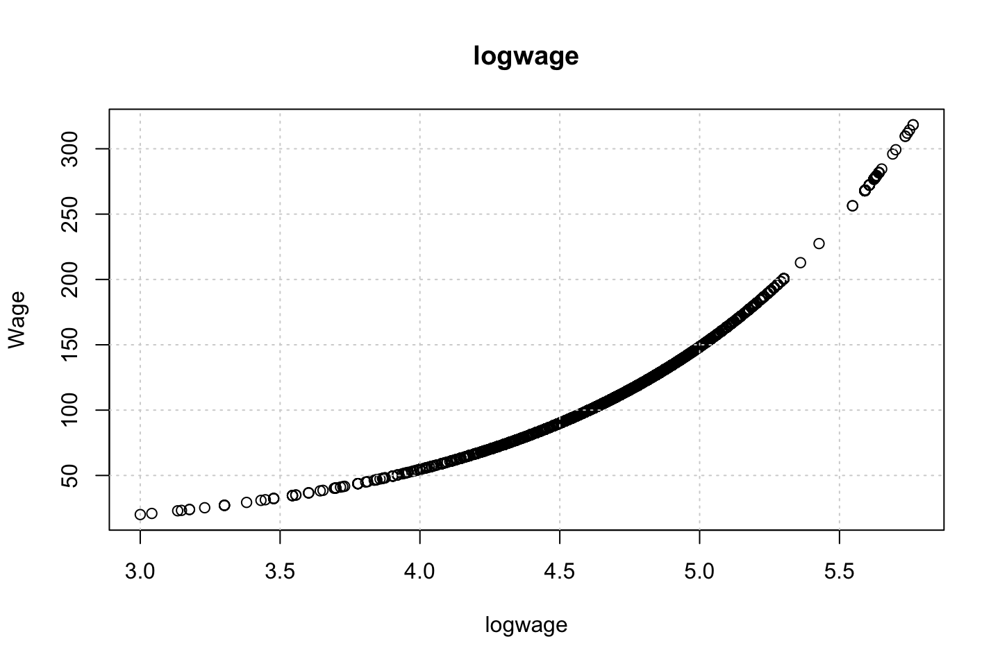
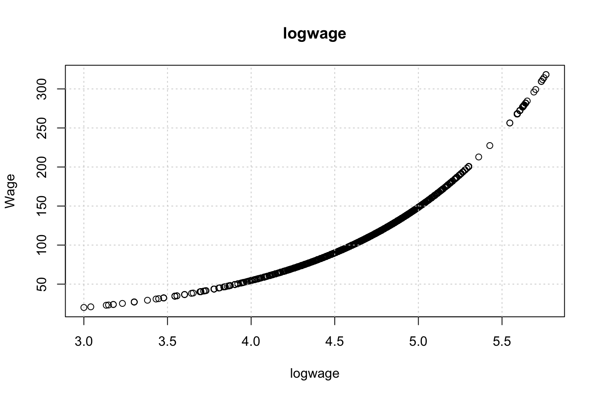

2.4 Exercises
2.4.1 Exercise 6
library(ISLR)
df <- Wage2.4.1.1 6.a Polynomial Regression
We use orthogonal polynomials in the modeling process as we know that these are slightly better than raw polynomials due to the fact that this tend to avoid collinearity.
Training the model
library(boot)
set.seed(1337)
cv.error = rep (0,5)
for (i in seq(from = 1,to = length(cv.error),by = 1)) {
#Training
fit.i <- glm(wage ~ poly(age,i),data = df) # notice glm here in conjunction with cv.glm function
#Performing cross validation
cv.error[i] <- cv.glm(data = df,glmfit = fit.i,K = 10)$delta[1] #K fold CV, delta = prediction error
}
#Printing the
cv.error # the CV errors of the five polynomials models## [1] 1675.056 1600.832 1594.505 1594.872 1594.608The vector above are all of the prediction errors computed in the loop.
which.min(cv.error)## [1] 3We see that the fifth prediction appear to yield the lowest MSE, but is it significantly different than e.g. forth or third order polynomial?
fit.1 <- glm(wage ~ poly(age,1),data = df)
fit.2 <- glm(wage ~ poly(age,2),data = df)
fit.3 <- glm(wage ~ poly(age,3),data = df)
fit.4 <- glm(wage ~ poly(age,4),data = df)
fit.5 <- glm(wage ~ poly(age,5),data = df)
anova(fit.1,fit.2,fit.3,fit.4,fit.5,test = "F")| Resid. Df | Resid. Dev | Df | Deviance | F | Pr(>F) |
|---|---|---|---|---|---|
| 2998 | 5022216 | NA | NA | NA | NA |
| 2997 | 4793430 | 1 | 228786.010 | 143.5931074 | 0.0000000 |
| 2996 | 4777674 | 1 | 15755.694 | 9.8887559 | 0.0016792 |
| 2995 | 4771604 | 1 | 6070.152 | 3.8098134 | 0.0510462 |
| 2994 | 4770322 | 1 | 1282.563 | 0.8049758 | 0.3696820 |
Using the F test, we see that on a five percent level the 4th ppolynomial is not justified, but close to.
Thus we select a model with three polynomials. Plotting the errors, we also see that there does not happen much after the thrid polynomial
plot(cv.error,type = "b")
Plotting the polynomial regression
This is done with the following procedure:
- Make a grid counting IDV (Age)
- Make predictions
- Make a plot with the variables
- Fit a line onto the predictions
- Perhaps calculate confidence levels and plot these
#Grid of X
age.grid <- seq(from = min(df$age),to = max(df$age),by = 1)
#Predictions
preds <- predict(object = fit.3
,newdata = list(age = age.grid) #Renaming age.grid to age
,se.fit = TRUE) #We want to produce confidence levels
#Plotting
plot(x = df$age,y = df$wage,col = "darkgrey",cex = 0.8)
grid()
lines(x = age.grid #We need to define the grid, otherwise the fit will not be alligned with the data
,y = preds$fit
,col = "red")
title("Polynomial of 3rd order")
2.4.1.2 6.b Step function
cuts <- 4
#Cutting the x variable
table(cut(df$age
,breaks = cuts))##
## (17.9,33.5] (33.5,49] (49,64.5] (64.5,80.1]
## 750 1399 779 72 #' Note, this only shows where the cuts lie and how many there are in each
#Fitting the step function
fit.step <- lm(wage ~ cut(df$age,4)
,data = df)
coef(summary(fit.step))## Estimate Std. Error t value Pr(>|t|)
## (Intercept) 94.158392 1.476069 63.789970 0.000000e+00
## cut(df$age, 4)(33.5,49] 24.053491 1.829431 13.148074 1.982315e-38
## cut(df$age, 4)(49,64.5] 23.664559 2.067958 11.443444 1.040750e-29
## cut(df$age, 4)(64.5,80.1] 7.640592 4.987424 1.531972 1.256350e-01We see that the the first cut (bin with people up to 33,5) have been left out. That is because they are contained in the intercept.
Now we can fit the step function
library(stats)
#Predictions
preds <- predict(object = fit.step
,newdata = list(age = age.grid)) #Renaming age.grid to age
#Plotting
# plot(x = df$age,y = df$wage,col = "darkgrey",cex = 0.8)
# grid()
# lines(age.grid
# ,preds
# ,col = "red")
# title("Step function of 3rd order")I need to check what she is doing, one could perhaps manually order the
2.4.2 Exercise 7
df <- WageEvaluating features other features to see how age respond hereon.
We can plot the variables agains each other, to see how they interact.
for (i in 1:10) {
plot(y = df$wage,x = df[,i],xlab = names(df)[i],ylab = "Wage")
grid()
names(df)[i] %>% title()
}


 

Looking at race, it appears as if there is some relationship between race and wage the same with maritial status. Region only has values in one category, jobclass appear to visually have different means. The same goes for health and health insurance. Naturall log of wage has a non linear relationship with wage. Although the variable is the same, thus it cant be used for much to predict wage levels.
Since all the variables of interest, and we haven’t worked with are all categorical, then we can’t really do any polynomial regression with the data, as they are all factors.
What one could do is a mutlivariate linear model with different factors, or step functions or perhaps GAM where a continous varaible with polynomials are included.
Therefore, I will not elaborate much more on this.